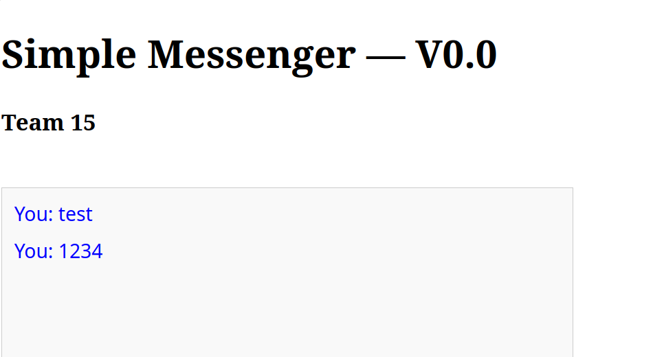
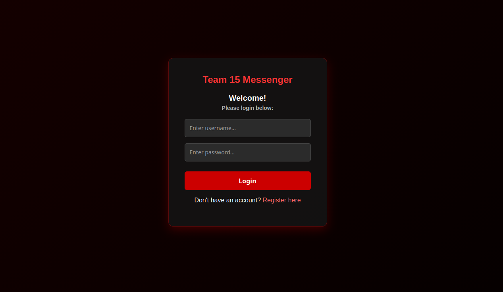
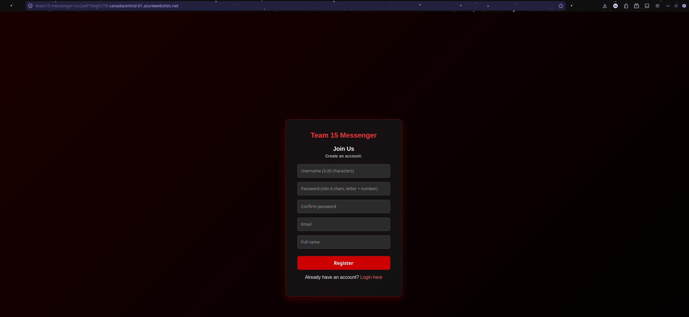
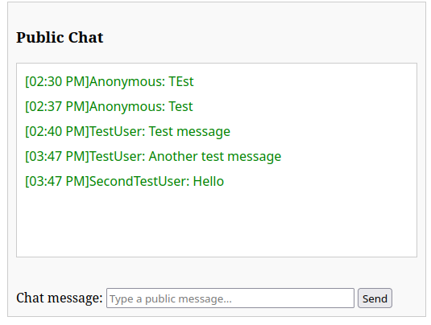
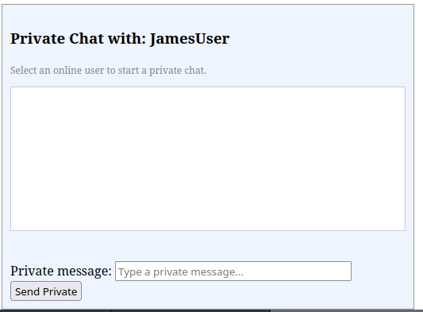

MESSENGERSOCKET.IO | JAVASCRIPT | GITHUB PROJECTS | AZURE +

MESSENGERMONGODB | SOCKET.IO | GITHUB PROJECTS | AZURE | WEB5
Note: This was a team project where I was the team leader. CSS styling was only applied to the login screen and registration screen to meet project requirements, and would be expanded to the chat and profile edit screens in a theoretical release of the application. The live site is hosted on Azure's "Free F1" plan, and will potentially be unavailable if you navigate to it. Thanks!
Our project is a secure messenger web application that allows users to communicate with each other through real-time messaging. The application supports public chat and private one-to-one messages so users can communicate easily without a complicated setup.
The target users are students, team members, and general users who need a simple way to send and receive messages online. Users will be able to log in with a username, view other connected users, send public messages, and send private messages.
The main problem this project solves is the need for a basic, easy-to-use, and secure communication platform. The system focuses on usability, real-time message delivery, and basic security requirements so only logged-in users can send and receive messages.
At a high level, the application uses a client-server architecture. The front end uses HTML, CSS, and JavaScript, while the back end will use Node.js and MongoDB Atlas for storing users and messages.
Generative AI was useful in this project. Since we were rapidly using new tools and languages since we were mostly focused on learning the Scrum and Agile processes, it allowed us to speed up our debugging processes. This was a huge help with Azure setup primarily as we had many issues with npm configuration and hitting quotas in Azure. It was also helpful for adapting provided code to some of the abnormalities in our codebase. This was a double edged sword, as it was causing many of these abnormalities itself, and expanding features later on often was more difficult as it didn't match what the instructor had provided. In future projects I would prefer to keep its role more in the deployment and documentation pipeline (assuming documentation is always verified), and less so in the actual codebase. Part of this may have been from using the Gemini chat interface instead of CLI, as CLI may have had a easier time navigating the codebase and suggesting fixes. The following three points are how I used it, and may not reflect what my team members used it for:
- Used for debugging code, especially when taking instructor provided code that didn't work well with our codebase and adapting it.
- Used for debugging Azure logs.
- Used for creating the CSS for the login screen, primarily due to time constraints, especially as I already had CSS experience with my portfolio site.
To log in, enter your registered username and password into the input fields and click the Login button. If you do not have an account, click the "Register here" link to switch views.
This will check the MongoDB Atlas cluster for the username of the user. If one is found, password hash will be compared, and if it is correct the user will be sent to the chat screen (chat.html). If not, the user will be prompted to enter a new username or password. This is our implementation of route protection, preventing users that are not signed in from accessing the chat screen. Passwords are hashed with bcrypt (cost factor 10) in both registration and profile updates; plaintext passwords are never stored or logged.
The login function (find) explicitly type-checks that username and password are strings before querying MongoDB, preventing operator-injection payloads (e.g., {"$ne": null}) from being passed as query values. Registration additionally validates username and password format via regex before any database query runs.
To register a new account, click the registration link, enter a unique username (3–20 characters), type a secure password (min 6 characters with a letter and number) into both password confirmation fields, provide your email, and enter your full name. Click Register to create your account.
The registration form collects a username, password, confirm password, email, and full name. If any field is empty, or the password and confirm-password fields don't match, an error message is displayed and no account is created. The server independently validates username format (3–20 word characters) and password complexity (minimum 6 characters, containing a letter and a number), and rejects registration if the username is already taken. On success, the user is prompted to log in with their new credentials.

Once authenticated, you are brought to the main dashboard. Use the public chat panel text input box to type your message and click Send to broadcast messages in real time to all connected users.
The main chat page is divided into two panels. The left panel shows the list of currently online users. The right panel shows the public chat feed with a text input and Send button at the bottom. Messages appear in real time as they are sent by any connected user. This image shows just the public chat panel

To start a private chat, select a user from the online users sidebar list on the left. The private chat panel will target that specific user, allowing you to send and receive direct 1:1 messages.

To update your profile, use the Profile Settings panel located at the top of the chat dashboard. Modify your full name, email, or enter a new password, then click Save Profile to update your record in the database.
The update-profile handler changes the password (and other fields) based solely on an authenticated socket session, without verifying the user still knows their current password. This is a defense-in-depth gap the team is aware of and would prioritize fixing before any production use.